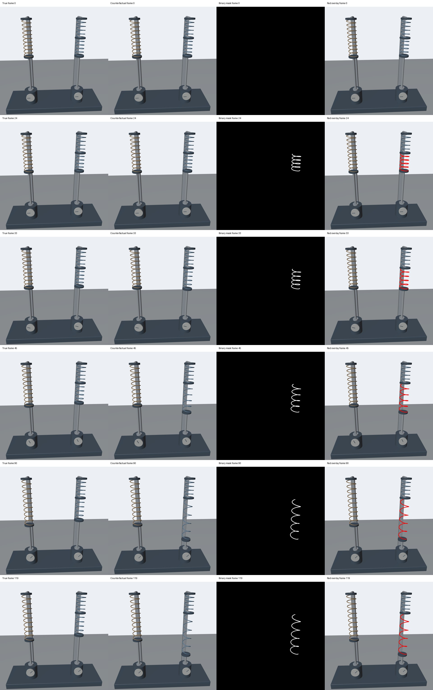
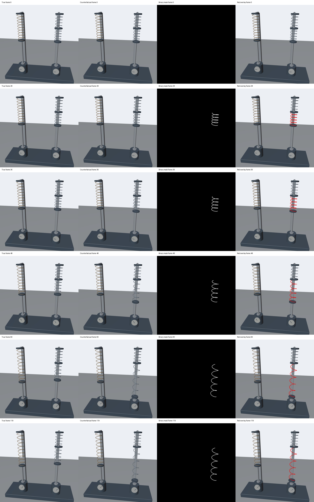
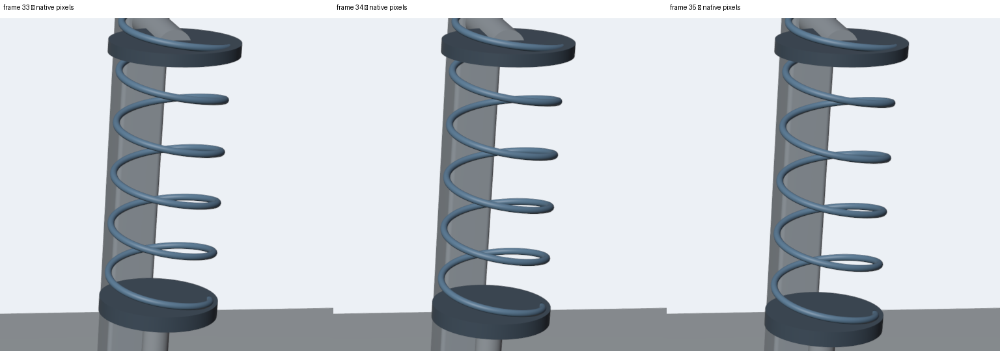
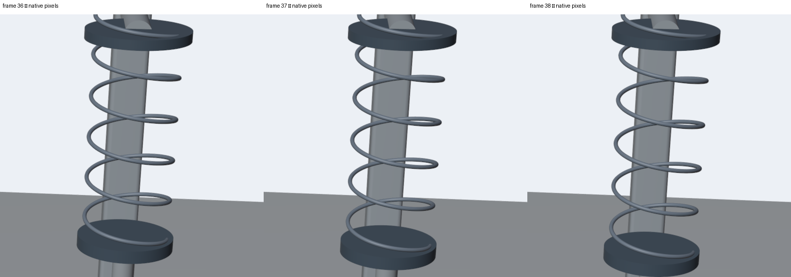

全部四项
活动圈数减少，弹簧却变软
夹住一半弹簧后，正常伸长更少；反事实伸长反而更多。
active_coil_count_stiffness_order_reversal
贡献者自检 PASS · 网页播放与跳转实测通过 · 待 Sara 独立审核
Source draft PR #701 · 完整审核版本：bd28cf0eb0fd50fb6e1904de2eed61f9fe412f5b
场景内已移除全部悬空文字，仅保留实体器材、刻度和标记。每组包含正常、反事实、黑白遮罩和红色叠加四路视频。下方播放器是 1024×1024 浏览器播放版；原始正式视频为原生 2048×2048、24 fps、120 帧、5 秒、无损 RGB H.264。播放版不替代正式像素检查。
本次完整渲染两组代表样例，不声称渲染了 10 万组；10 万是非渲染参数配置审核数量。
这次增强：右侧有效圈数减半，正常应只伸长左侧的一半；反事实现在伸长左侧的三倍。请比较两侧下端托盘的位置。
样例 42
干预帧 24；首次画面差异 24；证据帧 33。
两份独立提示词
True
Two identical ten-turn helical springs are fixed to a stand. A rigid grounded collar additionally clamps the midpoint of the right spring, leaving only its lower five turns active. Two force-controlled actuators gradually pull the lower ends downward with equal added force; their gauges rise together and then hold steady. The right spring is stiffer: its five active turns extend less than the ten active turns of the left spring. The upper half of the clamped spring stays fixed.
Counterfactual
Two identical ten-turn helical springs are fixed to a stand. A rigid grounded collar additionally clamps the midpoint of the right spring, leaving only its lower five turns active. Two force-controlled actuators gradually pull the lower ends downward with equal added force; their gauges rise together and then hold steady. The right spring anomalously becomes more compliant despite having fewer active turns: its five active turns extend farther than the ten active turns of the left spring under the same added force. Its upper half stays fixed.
完整元数据 · 原始文件 SHA256 · 逐帧编码检查
最终视频解码关键帧

样例 98
干预帧 28；首次画面差异 28；证据帧 36。
两份独立提示词
True
Two identical ten-turn helical springs are fixed to a stand. A rigid grounded collar additionally clamps the midpoint of the right spring, leaving only its lower five turns active. Two force-controlled actuators gradually pull the lower ends downward with equal added force; their gauges rise together and then hold steady. The right spring is stiffer: its five active turns extend less than the ten active turns of the left spring. The upper half of the clamped spring stays fixed.
Counterfactual
Two identical ten-turn helical springs are fixed to a stand. A rigid grounded collar additionally clamps the midpoint of the right spring, leaving only its lower five turns active. Two force-controlled actuators gradually pull the lower ends downward with equal added force; their gauges rise together and then hold steady. The right spring anomalously becomes more compliant despite having fewer active turns: its five active turns extend farther than the ten active turns of the left spring under the same added force. Its upper half stays fixed.
完整元数据 · 原始文件 SHA256 · 逐帧编码检查
最终视频解码关键帧

审核证据
| Gate | 结果 | 证据摘要 |
|---|
| Output contract | PASS | 2 complete native cases; 8 native streams; 2048² / 24 fps / 120 frames / 5s |
| Violating-object-only mask | PASS | 120-frame binary RGB and red-overlay checks; separately selected geometry identity pass; no shadows |
| Real scaling | PASS | 100000 distinct accepted static profiles; six controlled rendered axes; two visually different formal cases; 16 physical-axis corners |
| Official unpatched environment | PASS | Clean source; official pinned bpy 4.5.3; actual Python, renderer, GPU/driver, encoder and dependency witness |
| Decoded matched control | PASS | Exact decoded True/CF prefix and matching camera; first divergence and evidence bound to frames |
| Semantic consistency | PASS | Independent mechanics; standalone prompts; single registered operator; full-clip visual review passed; hosted Chrome playback and seeking passed |
Physics authority: generator-owned reduced mechanics. Blender is the renderer; no simulator-native claim. Physical seconds per video second = 1; one recorded outer step at 1/24 s, internal solver substeps recorded separately.
independent-audit.json · identity-projection-audit.json · scale.json · axis-probes.json · boundaries.json · runtime-witness.json · runtime-witness-index.json · runtime.json · reproduce-compare.json · tests.log ·
完整审核报告
原始视频 HTTP(S) 地址及 SHA256 · 完整材料校验清单
原生像素连续帧检查 · 样例 42

帧号、裁剪范围与版本
原生像素连续帧检查 · 样例 98

帧号、裁剪范围与版本
Chrome 实播与定位证据 · 两例八路实际网页画面